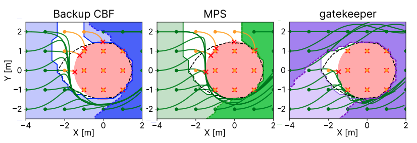
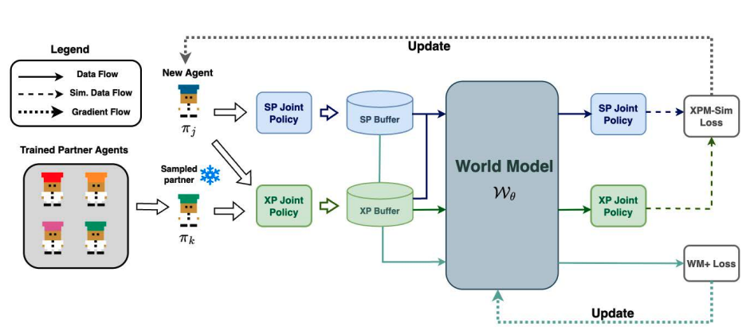
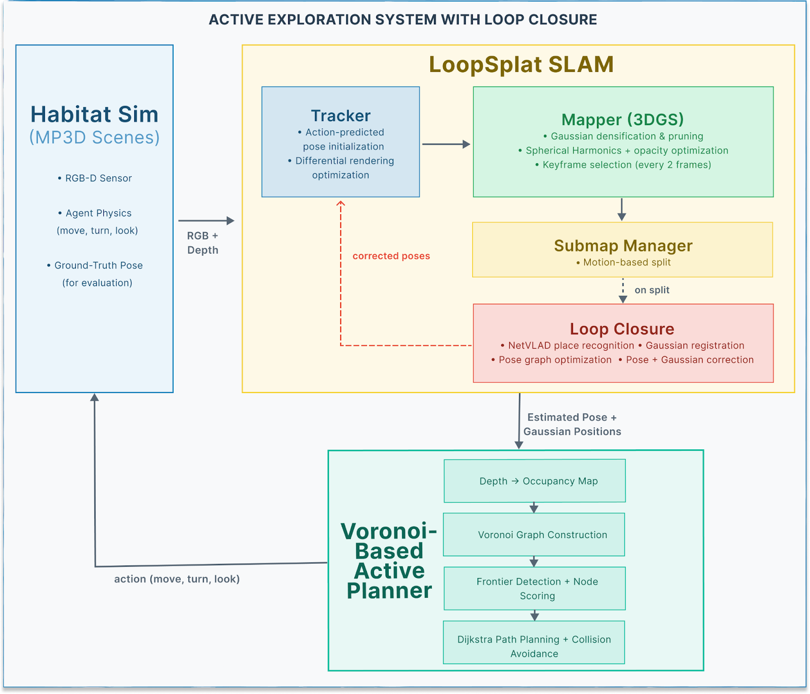
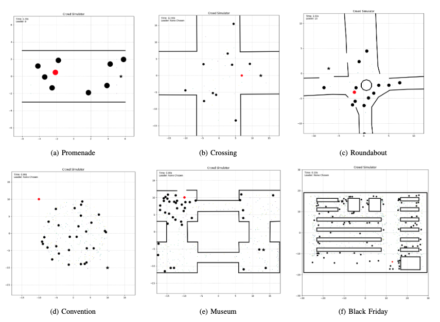

About Me

I'm currently a master's student at the University of Michigan's Robotics Institute, where I am advised by Prof. Ram Vasudevan and Prof. Dimitra Panagou. My research interests broadly encompass developing optimal control policies for robots to be able to safely and generally navigate our world. Previously, I worked as a research assistant at Singapore University of Technology and Design (SUTD) advised by Dr. Malika Meghjani, where I worked on multi-agent collaboration problems with human in the loop, and deployed these algorithms on real robots. I have also had the pleasure of working with Manas Gupta on designing sample-efficient architectural components for control tasks using bio-inspired methods like Hebbian Learning.
Projects

Backup-Based Safety Filters: A Comparative Review of Backup CBF, Model Predictive Shielding, and gatekeeper
This project reviews three backup-based safety filters -- Backup Control Barrier Functions (Backup CBF), Model Predictive Shielding (MPS), and gatekeeper. The work unifies their shared backup safety method and then compares them through their filter-inactive sets, i.e., the states where the nominal policy is left unchanged. In particular, we show that MPS is a special case of gatekeeper, and we further relate gatekeeper to the interior of the Backup CBF inactive set within the implicit safe set. The paper is intended as a compact tutorial and review that clarifies the theoretical connections and differences among these methods.

Efficient Generation of Diverse Cooperative Agents with World Models
The biggest issue in training for Zero-Shot Coordination Agent (ZSC) is generation of partner agents that are diverse enough for collaboration tasks. However, these methods can be extremely sample inefficient, and computationally expensive. In this work, we propose that simulated trajectories from the dynamics model of an environment can drastically speed up the training process for Zero-Shot Meta (XPM) methods. We introduce XPM-WM, a framework for generating simulated trajectories for XPM via a learned World Model (WM). We show XPM with simulated trajectories removes the need to sample multiple trajectories and show our proposed method can effectively generate partners with diverse conventions that match the performance of previous methods.

ActiveLoopSplat: Active Indoor Exploration with Loop-Closing Gaussian SLAM
LoopSplat provides dense 3D Gaussian Splatting (3DGS) SLAM with loop closure but operates only offline over pre-recorded sequences. ActiveSplat enables live active exploration but lacks loop closure, leaving it vulnerable to accumulated camera drift. In this work, we present ActiveLoopSplat, a live system running entirely within the Habitat simulator that unifies these capabilities to allow an autonomous agent to actively explore indoor environments while maintaining a globally consistent map.

A Hitchhiker’s Guide To Robot Navigation: People-Powered Path Planning
One of the biggest challenges for widespread use of robots is difficulty in navigating unstructured and dynamic environments such as crowds. Interestingly, humans are expert agents in this setting, being able to effortlessly navigate through highly crowded and unstructured environments regularly. Our work aims to integrate the Leader-Follower algorithm proposed by Liao et al. into the Social Force Model (SFM) based crowd simulator developed in our past assignments to produce a system with the pedestrian planning from SFM but with added robot navigation capabilities from Leader-Follower.